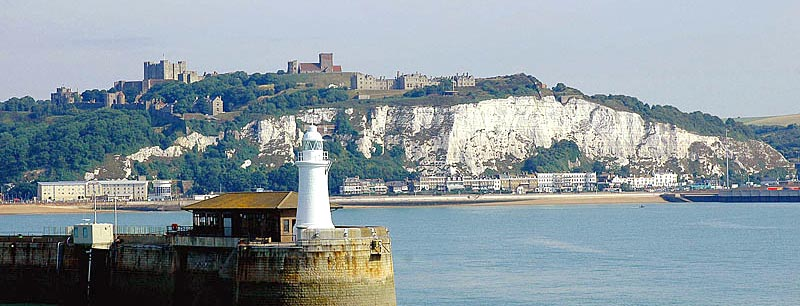
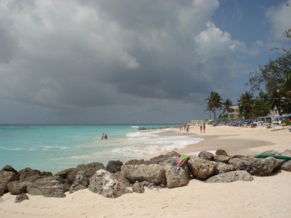

Дувр (Dover) – портовый город, расположенный на восточном побережье Англии в графстве Кент. Город находится на берегу самого узкого участка Ла-Манша – пролива Па-де-Кале. На противоположной стороне пролива расположено побережье континентальной Европы. Начиная с 1 апреля 1974 года Дувр является административным центром одноименного района (Dover District), в состав которого входят города Дувр, Дил (Deal) и ряд других населенных пунктов.
Название городу дала река Дуэ, название которой, в свою очередь, восходит к бриттскому имени дубрас (dubrās), в переводе означающего воды. Дувр расположился в устье реки Дуэ (Dour), в прибрежной долине, окруженной знаменитыми белыми скалами, которые открываются взору путешественников, пересекающих Па-де-Кале. Ширина Па-де-Кале в самой узкой части – между мысом Саут-Форленд (South Foreland) и мысом Серый нос (Cap Gris Nez) на нормандском побережье – составляет 34 километра. На возвышенностях к западу и востоку от Дувра находятся оборонительные сооружения, возведенные на разных этапах истории города для защиты от нападений с моря. Самым известным из них является Дуврский замок (Dover Castle), который принадлежит к числу крупнейших замков на территории Великобритании. У подножья скал проложена железная дорога. Климат в Дувре мягкий, в январе температура редко опускается ниже +1ºС, а в июле – нечасто поднимается выше +21ºС. Среднегодовая норма осадков: 703,6 мм; сезонное распределение неравномерное, пик выпадения осадков приходится на октябрь и ноябрь. В розе ветров преобладают ветры юго-западного направления.
 В соответствии с данными переписи населения, проведенной в 2001 году, в городе Дувр проживает около 28.200 человек, на территории городской агломерации Дувра – около 39.000. По данным за 2008 год, в районе Дувр (Dover District) насчитывается 104.600 жителей, при этом доля населения трудоспособного возраста (мужчины от 16 до 64 лет; женщины от 16 до 59 лет) составляет 57,6% от общей численности населения. Средняя продолжительность жизни мужчин и женщин – соответственно, 77 лет и 81 год. Доля экономически активного населения: 81,7% населения трудоспособного возраста – немного выше среднего показателя для Великобритании. Специалисты с высшим образованием составляют 22,1% населения трудоспособного возраста. По данным за август 2009 года, в Дувре насчитывается около 2.140 безработных; за предыдущие двенадцать месяцев уровень безработицы вырос на 71%. Особенно резкий подъем уровня безработицы отмечен среди молодых людей в возрасте от 18 до 24 лет.Средняя величина доходов на территории района Дувр (2008 год; полная занятость): 450 фунтов стерлингов в неделю. Многие жители района работают за его пределами. Средняя величина доходов жителя района: 499 фунтов стерлингов в неделю. Существует ощутимое различие между средней величиной доходов мужчин и женщин (соответственно, 612 и 380 фунтов в неделю). Средний размер почасовой оплаты труда: 12 фунтов стерлингов. Основообразующую роль в районной экономике играет сектор услуг. На долю государственных и местных органов управления, образовательных учреждений, торгово-розничных предприятий, объектов размещения, транспортных компаний, предприятий общественного питания, инвестиционно-финансовых компаний и банков приходится, в общей сложности, 79% от общего числа рабочих мест; на долю производственного сектора и строительства – 13,5% и 4% рабочих мест (2007 год). 8,3% рабочих мест приходится на долю туриндустрии и смежных отраслей. В число крупнейших работодателей входят транспортные компании.